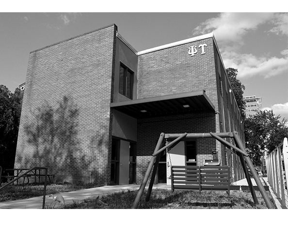

Chapter 34 on the roll
The Gamma Tau


- Position on the roll#34
- InstitutionGeorgia Institute of Technology
- Chartered1970
- StatusActive since 1970
In the archive
Pages that name the Gamma Tau Chapter or its institution.
Named on 168 pages across 92 volumes of the archive.
…ne University North Carolina Duke University Georgia University of Georgia Georgia Institute of Technology Oregon University of Oregon Except in the instance of a prospective Colgate chapter, we have never had any specific suggestions to investigate where…
Page25…Amherst Undergraduate Chapter Garry Bledsoe, Assistant Dean of Students, Georgia Institute of Technology John Feldkamp, Housing Director, The University of Michigan George T. Loker, Regional Director for Alpha Kappa Psi in Michigan Donald NeSmith, Assist…
…kes no reffgious de mands on its students. The Lee Chapel on the campus is Gamma Tau Chapter a historical landmark. It was made possible through a The recent history of our newest chapter represents a large grant for that purpose in 1961 from…
Page5…and the Gamma have mishandled problems of student unrest; have been Tau at Georgia Institute of Technology. This is our first far too permissive, faffing to face up to the issues square expansion into the south I am confident it will be emi- ly, giving ri…
Page4…rother CaUanen reported on the affaffs at the Psi, that Tau Chapter at the Georgia Institute of Technology, At the Chapter had just initiated nineteen fine young men. lanta, Georgia, will take place Saturday, December 19, The President announced the dates…
I Gamma Tau Installation The Gamma Tau Chapter of our Fratemity was in sented to the Gamma Tau by the Executive Council; a stalled at Georgia Institute of Technology, Atlanta, Geor Constitution of…
…an 8-1 record. Our representatives included Brothers The Technique of the Georgia Institute of Technology, March 12, 1971, contained the following story about the CosteUo, Dunnigan, Whiting, Rasmussen, Hunter, Stevens, and co-captain elect Dana Heumann. I…
…D. Bruce Graham, Nu '7't, v/as adopted by voice vote . RESOLVED: That the Gamma Tau Chapter be commended for the remarkable progress achieved since Its installation in December, 1970, In the face of such major obstacles as the lack of a Chap…
…ee here set forth. WITH HIGHEST ESTEEM University and the Gamma Tau at the Georgia Institute of Technology, and FROM JEROME WILLIAM BRUSH, JR. the exploration of other fertile fields THE EXECUTIVE COUNCIL Delta Delta 1939 has proceeded. Due to your perse v…
…in, '73, presi money and through your generosity, dent, wrote in late May: The Gamma Tau Chapter ranked "Our financial troubles are further we have been able to replace the first among the twenty-seven social compounded by the sale of the New sta…
Page20…rest Park 22903 Lane, Ithaca, N.Y. 14850, Alumni President: Rob Gamma Tom Georgia Institute of Technology ert A. Neff, '53, Seaboard World Airhnes, J.F.K. 1970 Georgia Institute of International Airport, Jamaica, N.Y. 11430 Technology, Atlanta,
Page32…r dated January 22, 1973, the fuU year, whfle disbursements to visited the Gamma Tau Chapter at from Brother Robie, Epsflon Omega taled $44,289 for the first haff year, Georgia Tech, December 2, 1972. Of '66, in his capacity as President of t…
…he upheaval, there is a telling demand '75, Brooklyn, New York; Joseph Ran Georgia Institute of Technology. For for persons with "a clear and worthy dolph Colahan '75, Garden City, New the Chi Delta we have the highest ex view of life," for persons of dyna…
…press my deepest gratitude and my years. I have had the opportunity to the Georgia Institute of Technology, heartfelt appreciation to the devoted do so because foUowing my retire Atianta, Georgia; and the Chi Delta and dedicated staff in the office of the…
Page18…at the Ohio, has been communicated to the DeUa, UpsUon, Eta, Psi, Epsilon Georgia Institute of Technology Feb alumni and the undergraduates of the Omega, Nu Alpha, Xi, Tau, Epsilon ruary 7, 1974. Robert W. Morey, Pi '20 Brother Morey, the fifteenth Presi…
…Plaza, Chicago, lU. 60670 CharlottesviUe, Va. 22901 P/ S\Tacuse Gamma Tau Georgia Institute of Technology University 1875 101 College PL, Syracuse, N.Y. 13210. Alumni President: David 1970939 State St., N.W., Atlanta, Ga. 30318 B. Salmon, '37, 195 Clfl…
Page36…e In extracurricular activities, we are end. This event, separate from the Gamma Tau Chapter are Marty Bis- still in the top. BUI Reinhardt, our cur University's Homecoming Weekend, rent IM chairman, wUl lead us to an set, Atlanta; Penny Call…
…'66, 26W538 Blair St. 207 Gentry Ave., Alexandria, Va. 22305 J^ Gamma Tau Georgia Institute of Technology fli Winfield, lU. 60190 1970939 State St., N.W., Atlanta, Ga. 30318 91 Pi Syracuse UniversUy 1875 101 College PI., Chi Delta Duke University 1973P.O…
Page36…o Duke with a spirit ketball team, eliminated last year in founding of the Gamma Tau Chapter. number of and enthusiasm unequaled in past finalist competition, may be even Joining us were a our brothers from the Chi Delta Chapter times. Our y…
…0637. Alumni Pres ident: Donald J. Yuknis, '66, 26W538 Blair St. Gamma Tau Georgia Institute of Technology Winfield, IU. 60190 1970939 State St., N.W., Atianta, Ga. 30318 Pi Syracuse University 1875 101 CoUege PL, Chi DeltaBuke University 1973P.O. Box 472…
Page28…y. winter quarter, we hope that we have Our plans for the spring include a The Gamma Tau Chapter is proud maintained those high standards more intensified rush effort and a to announce the initiation of four new which Psi Upsilon has estabhshed a…
Page25…18695639 South University Ave., Chicago, IU. 60637. Alumni Pres Gamma Tau Georgia Institute of Technology ident: Dennis C. Waldon '69, 3761 Dovraers Dr., 197076 3rd St., N.W., Atianta, Ga. 30308 Downers Grove, IU. 60515 Pi Syracuse University 1875 101 Co…
Page24…d time was had by all. The Cesar J. Bertheau '19, Peru, Vt., Feb. 12, 1977 The Gamma Tau Chapter became Southeastern Regional Coiiference al oancBON a considerably more cohesive group so was held with us the same week Joseph H. Checkley '13, Linc…
Page22…ng. In an outstanding and hard with others the next day. Separate meet (4) The Gamma Tau Chapter at the hitting address entitled "Are You Ever ings of the New England, the Upper New Georgia Institute of Technology to re Going to Amount to Somethi…
…1970 year. Joseph .V. DiNunno, Jr. '79 Alumni support was increasingly evi The Gamma Tau Chapter now is Associate Editor dent this past fall, a source of significant stronger than it has ever been in its short strength in a tremendousK important…
…er, NY 14638 5712 Schaefer Rd. Gamma Tau '79 Members Minneapohs, MN 55436 Georgia Institute of Technology Allan B. Wechsler,^ EpNu '68 Box 35719 ^ Harrison P. Bridge, BB '61 4 Loves Lane Atlanta, GA 30332 40 Yarmouth Rd. Wynnewood, PA 19096 Gilbert R. C.…
…unno, Jr.,' 5712 Schaefer Rd. Gamma Tau '79 Members Minneapohs, MN .55436 Georgia Institute of Technology Allan B. Wechsler,^ EpNu '68 Box 35719 ^ Harrison P. Bridge, BB '61 4 Loves Lane Atianta, GA 30332 40 Yarmouth Rd. Gilbert R. C. Hecker,' Gamma '80 W…
Page2…Campus: Student Union's Core Commit ma Campus: Chancellor's Roll of Honor, Georgia Institute of Technology tee Officer, Student Assembly Treasur Orientation Committee, Italian- er, Varsity Soccer American Club Home: Brockton, Massachusetts Chapter: Preside…
…n, IL David J. Rudis '75, 823 Oakdale, Chicago. IL 60657 60202 Gamma Tau Georgia Institute of Technology 1970 Pi Syracuse University 1875 101 College PL, Syra 334 Tenth St., N.W., Atlanta, GA 30318. Alumni cuse, NY 13210, Alumni President: Henry J, Wild…
Page28…his moving talk, the program Zeta, Kappa, Epsilon Phi; 6) A crest for the Gamma Tau Chapter Lower New England progressed along a lighter vein. Adhering Gamma, Xi, Beta at the Georgia Institute of Technology, to a custom started at the Conve…
Page6…LXVII Winter, 1982 Number 2 TABLE OF CONTENTS 2 The West Comes to Town 3 Gamma Tau Chapter Adopts Coat-of-Arms 3 Niagara Frontier Alumni Association Holds Founders' Day Dinner 4 Saga of the Lost Pin 5 1980-81 Annual Giving Results Best E…
…ain and further develop this tradi tion. The first stage of development be Georgia Institute of Technology 1981 1970 gan in January with the formation of a Just one year after its installation into "House Committee." This group is re Winter quarter the Gam…
…ago, IL 60657 ident: William R. Fleckenstein '54, 5600 Sugarbush Gamma Tau Georgia Institute of Technology 1970 Lane, Flint, MI 48504 334 Tenth St., N. W., Atlanta, GA 30318, Tel. 404Omega University of Chicago 1869 5639 South 892-6398. Alumni Pres…
Page24…on of the incorporation of for Academic Distinction to the Omicron and the Gamma Tau Chapter at Georgia the Psi Upsflon Fratemity as a non-profit Chapter at the University of Illinois, with Institute of Technology.
…initiated as a charter mem representative to Psi Upsilon Conven ber of the Gamma Tau Chapter on De tions from his Chapter since 1974, re cember 19, 1970. He served the Chapter John C. White maining a guiding light to the under as treasurer,…
…AMMA TAU Harold f Trischman, fr. '84 . Greetings from the Epsilon Nu! The Georgia Institute of Technology Associate Editors brothers here at Michigan State had a 1970 busy and successful fall term and are cur ZETA ZETA rently enjoying a winter term ofthe…
…ago, IL 60626 Phi University of Michigan 1865 1000 Hill St. Gamma Tau Georgia Institute of Technology 1970 Ann Arbor, MI 48104, Tel. 313-761-1055. Alumni Pres 334 Tenth St., N.W., Atlanta, GA 30318, Tel. 404- ident: Wflham R. Fleckenstein '54, 56…
Page26…obert S, Steele '64 (5) Charles W. Maurer '56 John A, Donovan, Jr, '63 (8) Gamma Tau Chapter Earl H. Nelson, Jr. '57 (4) Mackenzie D, Strathy '52 (5) Edward R. McCutcheon '55 (2) Charles K, Elliott, Jr, '54 (3) James R. Osborn '49 (2) Thomas…
…hn C. White, Hawkes, Theta '35, Special thanks should go to Jack S. of the Gamma Tau Chapter ing in behalf as permanent secretary. Gardner, Epsilon Nu '75, for his out was the brother combination of Joseph N . standing work in handling reser…
…e., Chicago, IL 60626 Phi University of Michigan 1865 1000 Hifl St., 1970 Georgia Institute of Technology Gamma Tau Ann Arbor, MI 48104, Tel. 313-761-1055. AlumniPres- 334 Tenth St., N.W., Atlanta, GA 30318, Tel. 404- ident: William R. Fleckenstein '…
Page22…ago, IL 60626 Phi University of Michigan 1865 1000 Hifl St., Gamma Tau Georgia Institute of Technology 1970 Ann Arbor, MI 48104, Tel. 313-761-1055. Alumni Pres 334 Tenth St., N.W., Atlanta, GA 30318, Tel. 404- ident: William R. Fleckenstein '54, 5…
Page18…as J. Gorman '82 (2) George P. Colis '76 (4) James F. Ramsey, Jr. '51 (13) Gamma Tau Chapter Thomas F. Dorn, Jr. '82 Hugh M. Walsh '82 (2) William A. Fitzsimmons '69 (2) William R. Robie '66 (11) Mark J. Finkelstein '83 Mark A. Fuller, III '7…
…lgrim, Birming W. Columbia Ave., Chicago, IL 60626 ham, MI 48009 Gamma Tau Georgia Institute of Technology 1970 Omega University of Chicago 1869 5639 South 334 Tenth St., N.W., Atlanta, GA 30318, Tel. 404- University Ave., Chicago, IL 60637, Tel. 312…
Page22…, IL 60626 ident: Edwin A. Spence, Jr. '57, 642 Pilgrim, Birming Gamma Tau Georgia Institute of Technology 1970 ham, MI 48009 334 Tenth St., N.W., Atlanta, GA 30318, Tel. 404- Omega University of Chicago 1869 5639 South 892-6398. Alumni President:…
Page25…. Timyan '79 (3) Harrison P. Sargent, Jr. '56 (8) Donald A. Coggan '66 (9) Gamma Tau Chapter Michigan State University Albert D. Trager '41 (9) Norman J. Schoonover '46 (9) John R. Gariand'36(12) James J. Warner '65 (6) Georgia Institute of T…
…plans were un (Providence, RI; Berkeley, CA) After long veiled for a new Gamma Tau Chapter absences from Brown University (since house at the dinner in Atlanta, where 1969) and the University of California at speakers included Vin DiNunno,…
…nd at this time the GAMMA TAU treal. house would like to thank the Mothers Georgia Institute of Technology And, finally, while on the subject of Club for their generous donations and 1970 our cmmbhng mansion, plans have been effort. made and authorized to…
…rris Post, '44 (14) Henry M. Goodyear, Jr., '50 (15) Joseph M. Powers, '24 Georgia Institute of Technology Wallace D. Riley, '49 William S. Grainger, '32 (13) William F. Rae, Jr., '38 (8) Marion C. Raggett, '73 * Deceased Harold F. Wood, Jr., '42(4) Ralph…
…not make it this year Chapter, but, by this time next year, I plan on mak Georgia Institute of Technology promise that we will have grown tre ing it next year. 1970 mendously, so don't count us out and We are in sound financial shape, our Our fall quarter…
…ity X949 620 Lincoln Street, Evanston, IL 60201, (312) 491-3158 Gamma Tau Georgia Institute of Technology I97O 334 Tenth Street, N.W., Atlanta, GA 30318, (404) 892-6398 Chi Delta Duke University ^qjo P.O. Box 4727, Duke Station, Durham, NC 27706, (919)…
Page24…sity 1949 620 Lincoln Street, Evanston, IL 60201, (312) 491-3158 Gamma Tau Georgia Institute of Technology 1970 334 Tenth Street, N.W., Adanta, GA 30318, (404) 892-6398 Chi Delta Duke University 1973 P.O. Box 4727, Duke Station, Durham, NC 27706, (919) 68…
Page24…sity 1949 620 Lincoln Street, Evanston, IL 60201, (312) 491-3158 Gamma Tau Georgia Institute of Technology 1970 334 Tenth Street, N.W., Atlanta, GA 30318, (404) 892-6398 Chi Delta Duke University 1973 P.O. Box 4727, Duke Station, Durham, NC 27706, (919)…
Page12…biUties be enjoyed their visit last summer with the home basketball games. Gamma Tau Chapter and its president, yond their academic obligations, as do Our chapter dominates the annual many fraternity men. Yet the efforts of Fred Corsiglia '89…
…Corps, R. Dubberiey, Gamma Tau, Graduate School, Electrical Engineering, Georgia Institute of Technology Daniel J. Epstein, Epsilon . . . Iota, Consultant, Arthur Andersen David D. Ferrentino, Upsilon, Law Jeffery M. Fisher, Epsilon Omega, Law Thoma( .…
…sity 1949 620 Lincoln Street, Evanston, IL 60201, (312) 491-3158 Camma Tau Georgia Institute of Technology 1970 334 Tenth Street, N.W., Atlanta, GA 30318, (404) 892-6398 Chi Delta Duke University 1973 P.O. Box 4727, Duke Station, Durham, NC 27706, (919) 6…
Page16…Washington and Lee University and ofthe Psi Upsilon Foundation, Jerry the Gamma Tau Chapter at the Brush became its president in 1972, A memorial scholarship fund Georgia Institute of Technology. later filling the position of treasurer. has…
of PSI UPSILON 3 Gamma Tau Chapter at the Georgia In stitute of Technology, this Convention will undoubtedly prove to be one of the most memorable Conventions in Psi U history. In addi…
…ity 1949 620 Lincoln Street, Evanston, IL 60201, (312) 491-3158 Gamma Tau Georgia Institute of Technology 1970 334 Tenth Street, N.W., Atlanta, GA 30318, (404) 892-6398 Chi Delta Duke University I973 P.O. Box 4727, Duke Station, Durham, NC 27706, (919)…
Page28…ill, along with the lips, our Acting Executive Director, and our two Field Di Gamma Tau Chapter be the host and looks foi-ward along with rectors in the development of the substantive agenda for the all members of the Executive Council to welcom…
…sity 1949 620 Lincoln Street, Evanston, IL 60201, (312) 491-3158 Gamma Tau Georgia Institute of Technology 1970 334 Tenth Street, N.W., Adanta, GA 30318, (404) 892-6398 Chi Delta Duke University 1973 P.O. Box 4727, Duke Station, Durham, NC 27706, (919) 68…
Page16…Assistant to the in the same ceremony held in the Kumler Student Affairs, Georgia Institute of Technology; Mark D. Bauer, Omega '83, Chapel on the lovely Miami Campus. The Attorney, Federal Trade Commission; Dr. Kenneth S. Ball, Eta '82, Assistant group h…
…PUSOG), the alumni corporation of ment and Operations of Annandale Vil the Gamma Tau Chapter at Georgia Tech. lage, a residential care facility for the He presently serves as Treasurer of mentally handicapped in Suwanee, PUSOG and was its Pre…
…ity 1949 620 Lincoln Street, Evanston, IL 60201, (1'08) 491-3158 Gamma Tau Georgia Institute of Technology 1970 334 Tenth Street, NW, Atlanta, GA 30318, (404) 892-6398 Chi Delta Duke University 1973 P,0, Box 4727, Durham, NC 27706, (919) 684-4273 Zeta Ta…
Page29…o The brothers at the ? Our progress is being gram was put into effect, in Gamma Tau Chapter gain cluding increased study recognized. Faculty inter hours and five new brothers this action has been healthy updated test Chi Delta (1973) files.…
Page34…d Lee Univ . (inact. since 1974 ) 1970 July 25 - 28, 1996 34 ) GAMMA TAU , Georgia Institute of Technology 1970 1996 Leadership Institute 35 ) CHI DELTA , Duke University 1973 153 rd Psi Upsilon Convention 36) ZETA TAU , Tufts University ( suspended, 1992…
…lmost immediately afterwards. will be a masters student at l of T in aero- Georgia Institute of Technology Brother Henry llao yu Lin *96 was space engineering. Mark Bicrnacki *95 was I he chapters biggest alumni event of the named as the Ghi Della s 1995 O…
…ALPHA, Washington and Lee University (inactive since 1974) 1970 GAMMA TAU, Georgia Institute of Technology 1970 CHI DELTA, Duke University 1973 ZETA TAU, Tufts University (suspended 1992) 1981 EPSILON IOTA, Rensselaer Polytechnic Institute 1982 PHI BETA, C…
Page106…hoir. Brother tion . Brian Kurutz '97 was the cello in the Gallery Players Georgia Institute of Technology; Causey will be in charge of recognized as the chapter's chamber ensemble. Josh Wolfe Andrew Tiches, east asian public relations for the 1996 Outstan…
Page13…LPHA Washington & Lee University ( inactive since 1974 ) 1970 34 GAMMA TAU Georgia Institute of Technology 1970 TAU 1891 | Pennsylvania 35 CHI DELTA Duke University 1973 The brothers of the Tau were . Mark W Begor, Pi '80, who very pleased to welcome the G…
Page13…el . Gamma Tau . James T Fitzgerald ' 62 ( 17 ) Robert J Werner ' 53 ( 4 ) Georgia Institute of Technology . Albert D Trager ' 41 ( 21 ) Silver Level Jonathan T. Howe ' 63 ( 4 ) Anniversary Club Richard M. Smith ' 54 ( 8 ) Robert A . Burns ' 55 ( 25 ) Anni…
Page20…rgensinger: Blake Beusse Jeffrey Andreatta, employed by a law 34 Gamma Tau Georgia Institute of Technology 1970 Black David Colliver ; Chris firm ; Gary Bisbee employed by 35 Chi Delta Duke University 1973 Deronne; Kevin Gracely . Paul Lehman Brothers; Jef…
Page9…of California, Berkeley), Gamma Tau Washington, Toronto, McGill, British (Georgia Institute of Technology), and Columbia, and Northwestern. Because of a Kappa Phi (Pennsylvania State University). 1 THETA, November 24, 1833 Union College, Schenectady, New…
…. Schaefer, '65 (7) David William Manthey, '92 (3) Other Donors Epsilon Nu Georgia Institute of Technology Michigan State University Paul A. Schmidt, '53 (3) John P. Marston, '92 Vincent Mudd, '98 Roland J. Shelby, '51 (13) Anniversary Club . 5.20 % R. Fra…
…THETA EPSILON March 30 ZETATAU University of Southern GAMMA TAU California Georgia Institute of Technology Tufts University June 23 December 19 April 24 1952 1970 1973 1981 January 21 - Alger Hiss, a President Richard M. Nixon January 22 -In Roe vs. Wade,…
Page13…shington and Lee University 1970 Anthony J . Veiga , Beta Kappa GAMMA TAU, Georgia Institute of Technology 1970 Washington State University' CHI DELTA, Duke University 1973 ZETA TAU, Tufts University 1981 David J . Liola, Lambda Sigma EPSILON IOTA, Renssel…
…, Washington and Lee University 1970 Phi Delta, Mary Washington GAMMA TAU, Georgia Institute of Technology 1970 Todd Muhlfelder College Chi, Cornell University CHI DELTA, Duke University 1973 Ryan Maxson ZETA TAU, Tufts University 1981 John F. Rossi III EP…
Page31…rn California 1952 NU ALPHA, Washington and Lee University 1970 GAMMA TAU, Georgia Institute of Technology 1970 CHI DELTA, Duke University 1973 ZETA TAU, Tufts University 1981 EPSILON IOTA, Rensselaer Polytechnic Inst. 1982 PHI BETA, College of William and…
…of Columbia University Gamma Tau Technology Fernando Martinez '04 Omicron Georgia Institute of Technology Calvin Christian '04 University of Illinois Sean Caulfield '05 Ken Elling '02 Psi Matthew DalSanto '03 George Goodyear '04 Alexander Magallon '01 Ham…
Page21…. www . psiu . org NU ALPHA Washington and Lee University 1970 GAMMA TAU, Georgia Institute of Technology 1970 CHI DELTA,Duke University 1973 ZETA TAU, Tufts University 1981 and follow the EPSILON IOTA, Rensselaer Polytechnic Inst. 1982 PHI BETA , College…
Page37…e from 1974-present 9p|^|jj^i^*, 34 GAMMA TAU, December 19. 1970 CHI DELTA Georgia Institute of Technology, Atianta, Georgia Duke University $"5 CHI DELTA, March 30, 1973 Duke University, Durham, North Carolina From the Chi Delta Phi Fratemity 36 ZETA TAU…
…of Illinois Standards Board . Visitor Service Association and Gamma Tau - Georgia Institute of Technology He has been treasurer of the is treasurer of the National Lambda Sigma - Pepperdine University Board of Governors of Interna - Association of Women's…
Page28…Scott Fisher '04 Jordan Thomas Estey '06 Gamma Tau Justin Joseph Tese '05 Georgia Institute of Technology lota-Kenyon College Rory Lynde Pillsbury '05 David Rodney Carroll '06 Sean Michael Caulfield '05 Annual Fund Exceeds Goal, Laura Emiiy King '04 Phi U…
Page17…el Schatkoske EPSILON NU, Michigan State University Paul Engler GAMMA TAU, Georgia Institute of Technology Patrick Decker CHI DELTA, Duke University Xin Zheng EPSILON IOTA, Rensselaer Polytechnic Institute... Damien Vera PHI DELTA, University of Mary Washi…
…GAMMA TAU CHAPTER ARichard V. Morgan '60 (10) Steven John Raseman 79 (25) Georgia Institute of Technology SILVER LEVEL Edwin K. Reuling '60 (8) SILVER LEVEL ARobert A. Benish '86 (3) AKyle Rhodes '08 Chester Kam '94 (11 ) ADavid H . Brogan '56 (8) Dan C.…
…$1 173 Patrick Scott Armstrong, - GAMMA TAU CHAPTER OTHER DONORS $1 - 173 Georgia Institute of Technology Nicholas Carlisle Dusenbury '95 ( 2 ) USN '01 ( 8 ) SILVER $250 - 499 Dutton Reitz Hauhart '(H) ( 8 ) W'illiam G. Aughton '72 ( 3 ) AFrcderic A. Cors…
Page26…inia Inactive from 1974-present 34 GAMMA TAU, December 19, 1970 CHI DELTA Georgia Institute of Technology, Adanta, Georgia Duke University 35 CHI DELTA, March 30, 1973 Duke University, Durham, North Carolina From the Chi Delta Phi Fraternity 36 ZETA TAU…
…lpha Washington and Ux* University 1970, inactive since 1974 34. Gamma Tau Georgia Institute of Technology 1970 35. Chi Delta Duke University 1973 36. Zeta Tau Tufts University 1981, inactive since 1992 37. Epsilon Iota Rensselaer Polytechnic Institute 198…
…hen she was in her twenties. The announcement came as shocking Gamma Tau - Georgia Institute of Technology news. My wife and 1 offered to arrange to host their first meeting at our house, Chi Delta - Duke University so we could be there to support Aunt Phy…
…exington, Virginia Inactive from 1974-present December 19, 1970 GAMMA TAU Georgia Institute of Technology Atlanta, Georgia March 30, 1973 ZEFA ZETA CHI DELTA Duke University, Durham, North Carolina From the Chi Delta Phi Fraternity 37 Psi Upsilon's Memb…
…mbia ) | Mugurel Mic Zeta ( Dartmouth College ) | Tobin Paxton Gamma Tau ( Georgia Institute of Technology ) | Amanda Nabors Lambda (Columbia University ) | Cole Stephens Chi Delta ( Duke University ) | Sarah Mayo Psi ( Hamilton College ) | Nick Noonan Eps…
…of Administration Jonathan Chaffin, Dir. Member Engagement Gamma Tau '00 (Georgia Institute of Technology) HISTORY & ARCHIVES COMMITTEE Evan W. Terry, Epsilon Phi '93 (McGill University) Jonathan M. Chaffin, Gamma Tau '00 (Georgia Institute of Technolog…
Page48…inistration Jonathan Chaffin, Director of Member Engagement Gamma Tau '00 (Georgia Institute of Technology) HISTORY & ARCHIVES COMMITTEE Evan W. Terry, Epsilon Phi '93 (McGill University) Jonathan M. Chaffin, Gamma Tau '00 (Georgia Institute of Technolog…
Page36